Дети
Новорождённые, малыши до года и детские проекты. Формат подбираем под возраст и характер ребёнка.

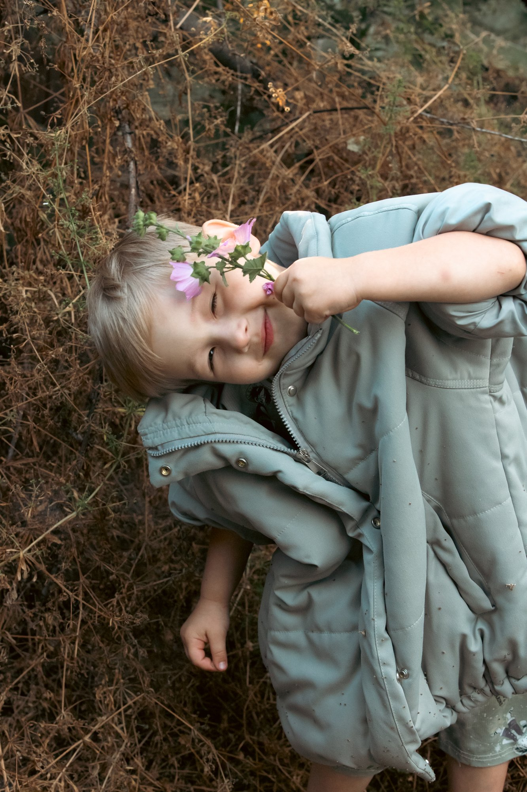

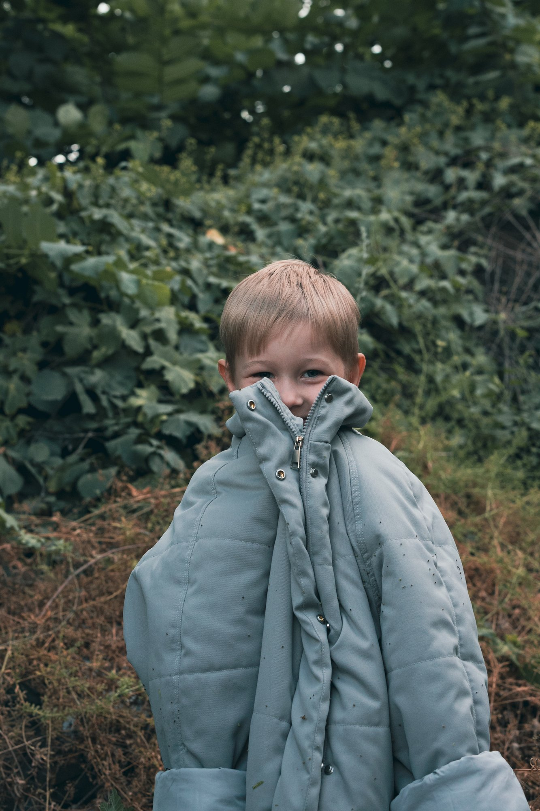

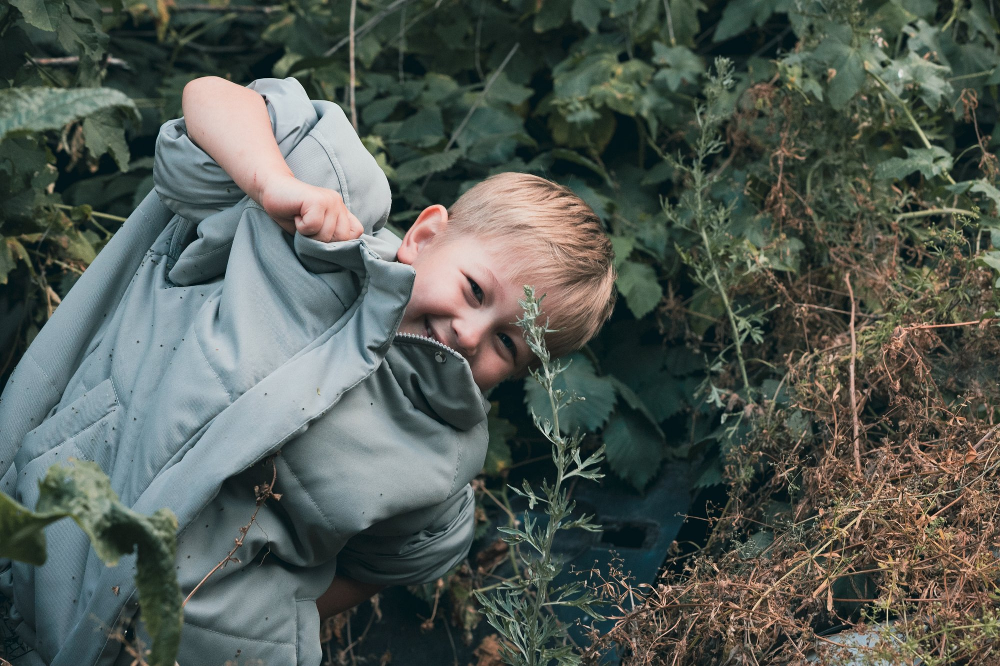

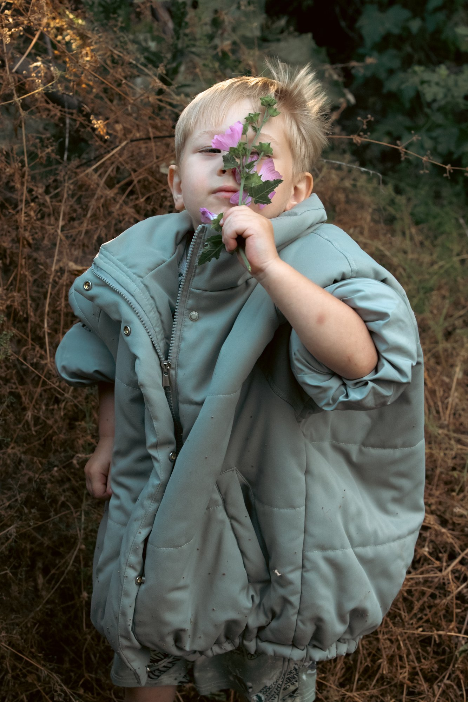

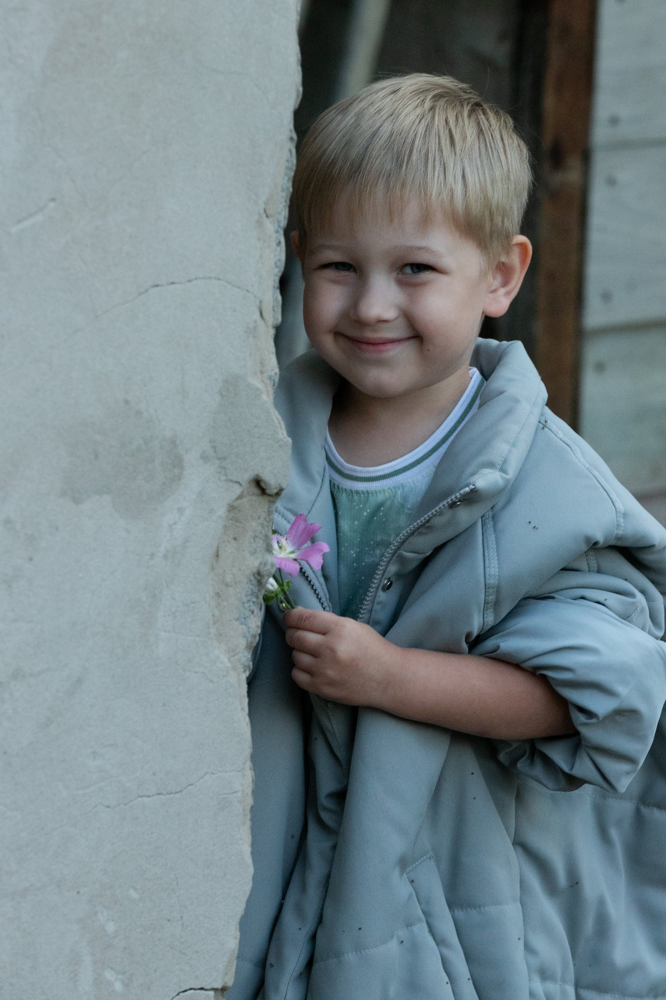

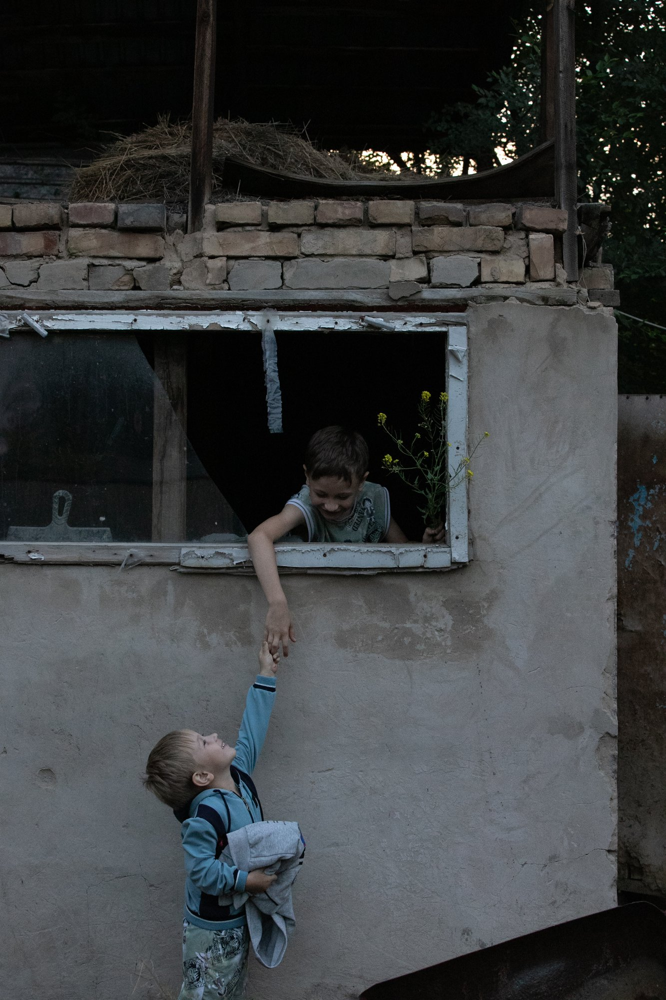

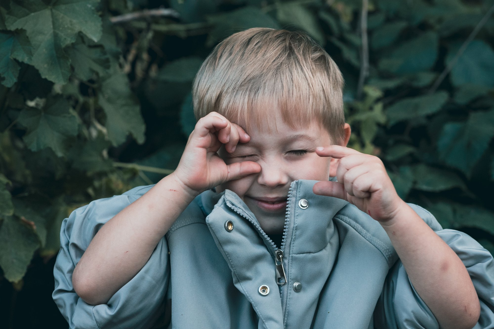

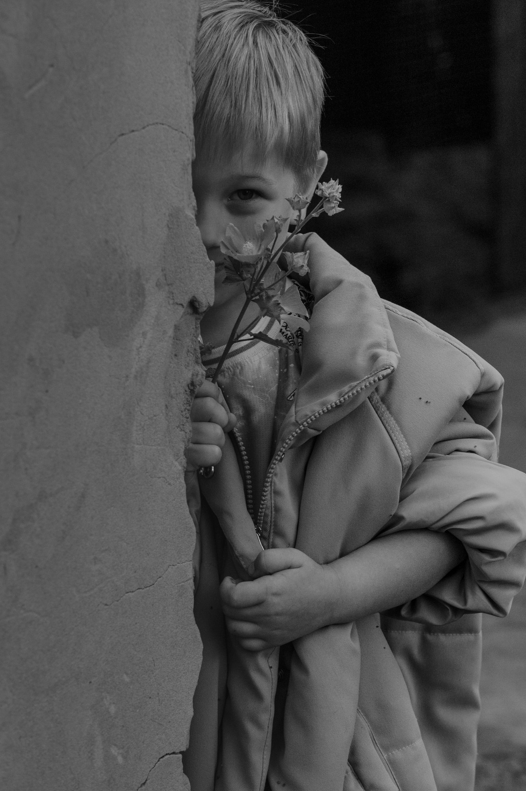

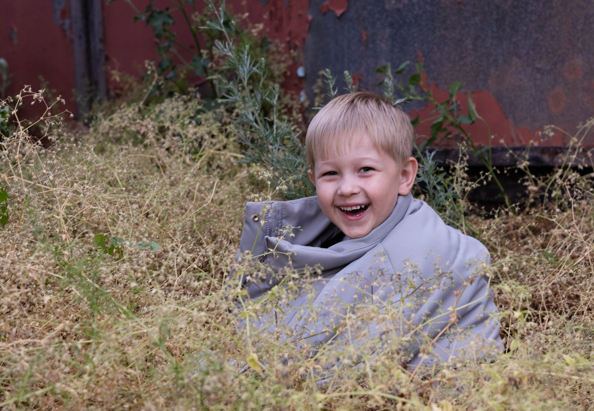

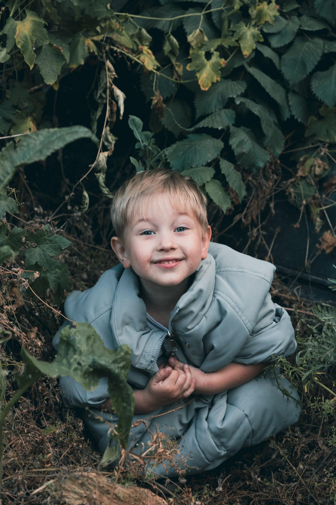

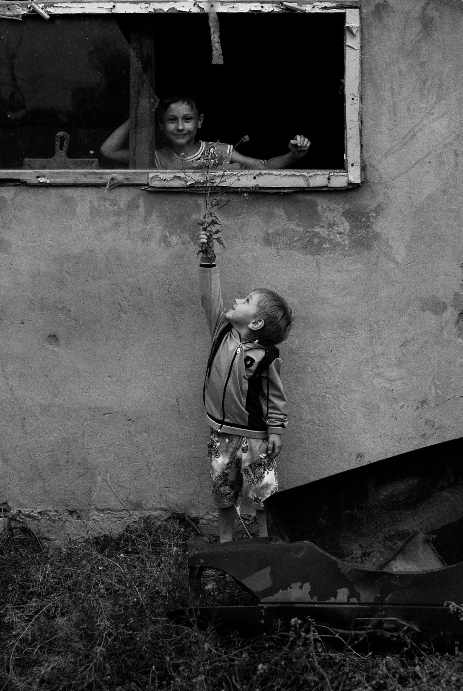

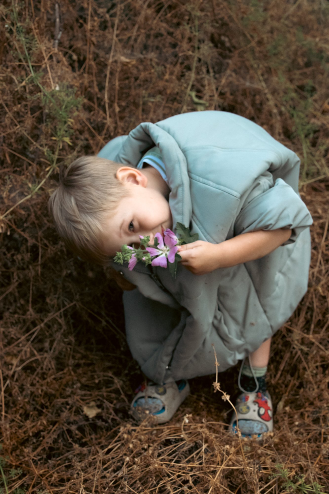
Что входит
- Ньюборн в студии
- Лайфстайл с новорождённым дома
- Малыши 3–12 месяцев
- Сезонные детские проекты
Стоимость
Стоимость по запросу
Напишите мне в директ: расскажу о стоимости, свободных датах и помогу выбрать формат. Отвечаю сама.
Узнать стоимость